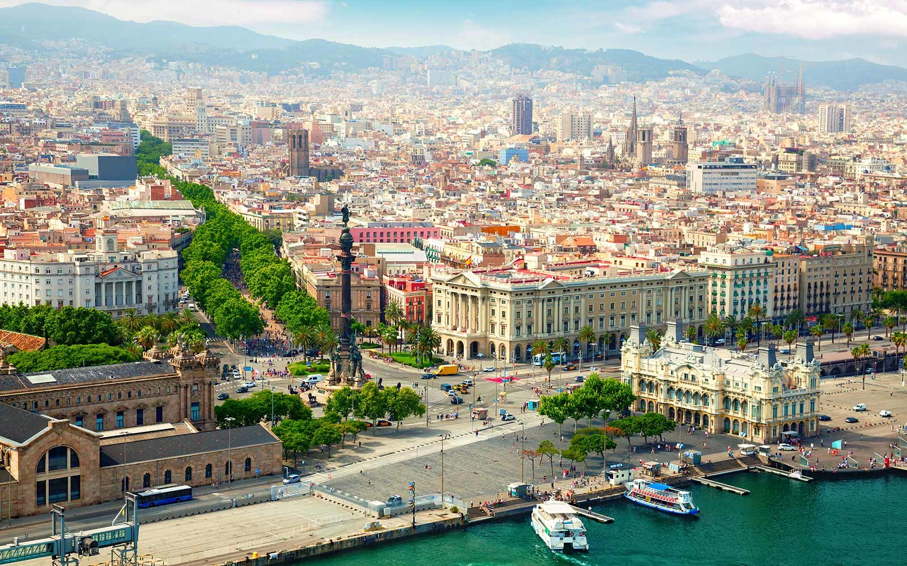
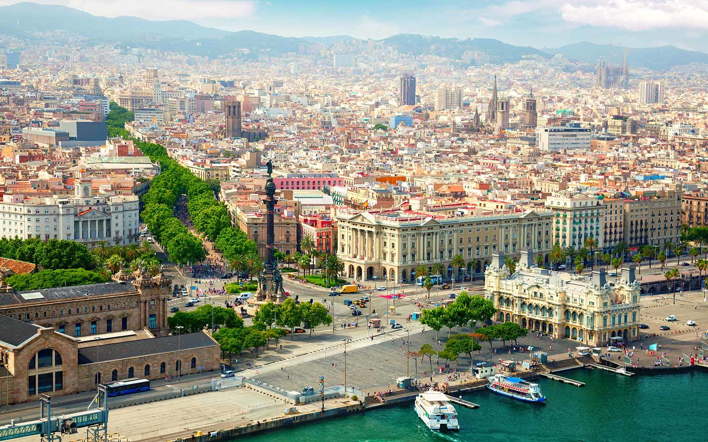
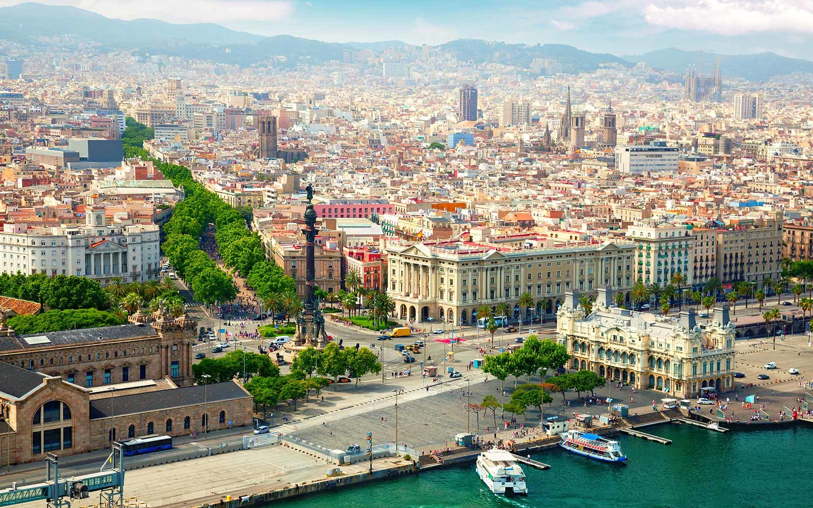
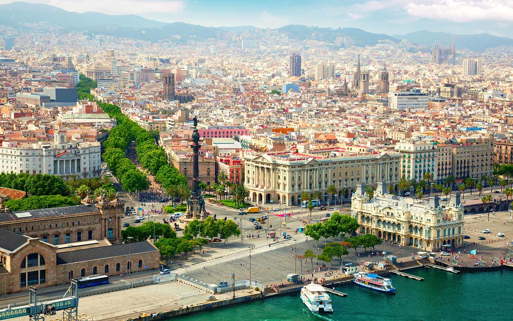

est la capitale administrative et économique de la Catalogne, de la province de Barcelone, de la comarque d'El Barcelonès ainsi que de son aire urbaine et de sa région métropolitaine, en Espagne.
Article détaillé : Barcino. Des fouilles ont mis au jour une partie de la cité romaine de Barcino qui est exposée au musée d'Histoire de la ville. Ces travaux archéologiques ont permis à la Mairie de Barcelone de publier un dossier historique consacré à l'histoire de la ville depuis ses origines jusqu'à l'époque contemporaine. Ces recherches mettent fin à la légende historique bien que fausse faisant d'Hannibal Barca le fondateur de Barcelone7 et attribuent cette construction au fils de l'empereur Auguste, apparemment sur un emplacement ibère. Barcino était à cette époque une petite place fortifiée, peuplée au maximum de deux mille habitants essentiellement militaires, au côté de Bætulo (Badalone). C'était une des places mineures de la Catalogne contemporaine. Les villes majeures étaient Empuriæ et surtout Tarraco, capitale de l'Hispanie citérieure.
La Catalogne est la principale région industrielle espagnole, avec la construction automobile (usines des groupes allemand Volkswagen AG et japonais Nissan), l'électronique, la chimie et le textile comme secteurs de pointe et, depuis quelques années, l'agroalimentaire. Les services représentent 59 % de l'activité, l'industrie 36 % et l'agriculture moins de 4 %. Sous l'impulsion de capitales d'industrie plus européennes qu'espagnoles, la Catalogne s'est associée au Languedoc-Roussillon et à la région Midi-Pyrénées pour former l'Eurorégion Pyrénées-Méditerranée. L'aéroport de Barcelone et le port autonome de Barcelone se trouvent au sud de la ville. Ils jouxtent la zone franche où se trouve concentrée une grande partie de l'industrie lourde. La zone est desservie par la ligne 9 du métro de Barcelone (zone franche, Hospitalet de Llobregat). L'aéroport est relié par une ligne de train de banlieue indépendante et de nombreuses connexions routières.
Les Rambles est l'emblématique avenue et lieu de promenade de Barcelone reliant la Plaça de Catalunya, centre névralgique de la ville, au vieux port où se dresse la colonne Christophe Colomb. Elle se caractérise par ses nombreux kiosques dédiés à la presse mais aussi à la vente de fleurs ou d'animaux. C'est aussi le lieu de prédilection des statues vivantes et un lieu idéal pour se restaurer, de nombreux restaurants ou cafétérias la bordant. En son milieu, se tient le marché couvert adjacent de la Boqueria. Elle est complétée par une passerelle, dite Rambla de Mar, permettant d'accéder au centre commercial Maremagnum.
Comme dans le reste de la Catalogne, le catalan et le castillan sont toutes deux langues officielles. Le catalan est parlé par 70 % de la population alors que les bilingues catalan/castillan représenteraient 85 % de la population39. La plupart des panneaux de signalisation sont en catalan uniquement, et dans toute l'administration, dans la rue, les espaces publics, la langue catalane prévaut. Cependant, les touristes s'expriment généralement en castillan, et beaucoup d'étudiants étrangers (français notamment) viennent suivre à Barcelone des cours de castillan. La grande majorité des Barcelonais savent généralement s'exprimer dans les deux langues, et les problèmes de compréhension linguistiques demeurent plutôt rares. La principale chaîne de télévision catalane, TV3, qui diffuse ses émissions depuis Barcelone, est entièrement émise en catalan.